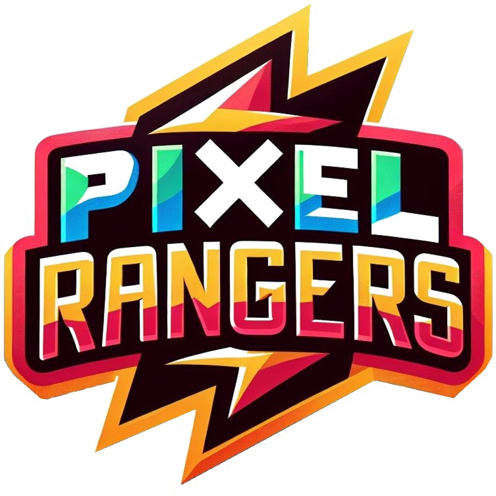

Pixel Rangers
Visão Computacional

Equipe
Caio Vilor Brandão
Gustavo Henrique Germano Ledandeck
Lucas Pereira de Medeiros
Laboratórios
Relatório 1 - Captura de Imagem e de Video
Relatório 2 - Calibração de Câmeras
Trabalhos
Cenário de aplicação
Modelagem funcional do sistema
Seminário 1
Contatos
lucas.medeiros@aluno.ufabc.edu.br